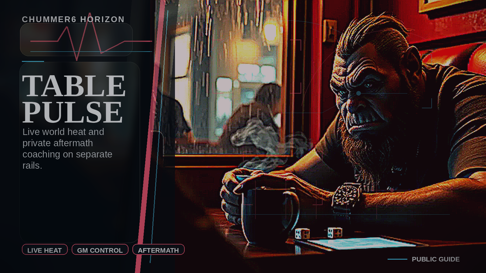
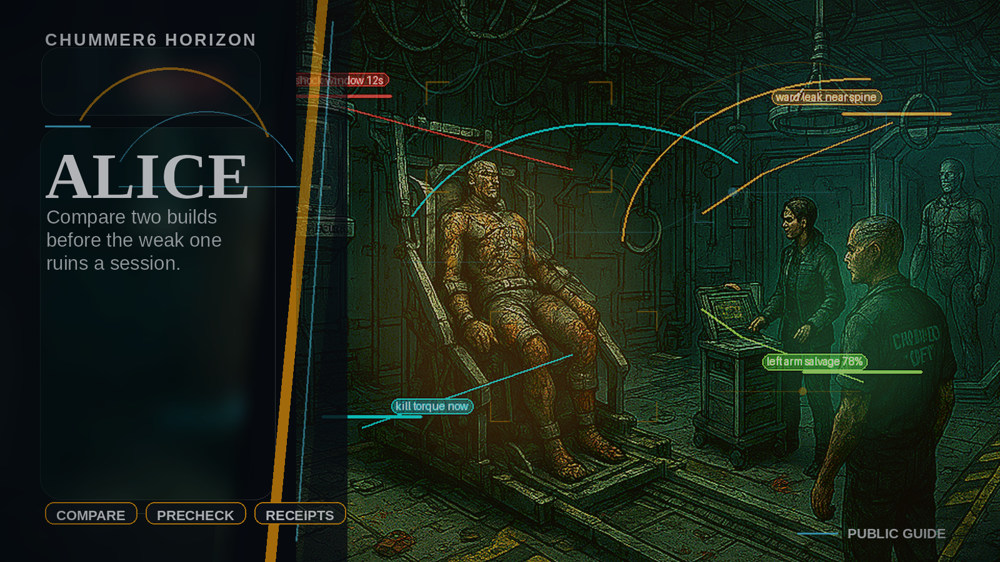

Character generator for Shadowrun 5th edition
This project picks up the work done by Aaron Schmidt and Keith Rudolph for Chummer, a character generator program for Shadowrun.
The repository for Keith's original code can be found at: https://code.google.com/p/chummer/ The repository for Aaron's original code can be found at: https://code.google.com/p/chummer5/
Live-table pressure, player follow-up, and GM-approved world fallout for Chummer6.
Use these notes when you want the larger table picture: player action cards, runner identity, GM steering, public-safe fallout, Origin Dossier, ALICE, and short reaction moments that keep the city moving without taking authority away from the GM.
What Belongs Where: Chummer6 should read like one product with a strong core and a few ambitious expansion bets. If a user needs it to build, understand, run, remember, or return to a campaign, it belongs in the product story. The future shelf is only for the larger bets that still need distance from today’s download.
Visual notes

Table Pulse Live Pressure: Table Pulse is the live pressure rail: a GM-governed action board that turns heat into bounded reactions, receipts, and public-safe fallout.

ALICE Origin Dossier: Origin Dossier and ALICE bring a user-first lane into the stack: approved canon, grounded build help, and derivative dossier media on one governed rail.
Videos
Video And Narration: Videos should feel authored and cinematic, but they still explain the product rather than performing as evidence. Only narrated, captioned clips belong in this reader-facing list.
Downloads And Support Should Feel Boring: Release, updater, Arch/CachyOS packaging, account claiming, and instant help are maintenance lanes. They should make the product feel dependable without becoming another branded surface a new visitor has to decode.
Origin dossier and ALICE are now part of this public explanation layer because the flagship story no longer starts only with table heat.
GM Cockpit And Steering keeps GM steering, allowances, mini-game adjudication, and public-safe fallout on one calm control surface.